# Pack29e production retest — c2b1624 Tested 2026-10-29 in Microsoft Edge at https://buhurt-os.vercel.app. The app footer reported c2b1624 throughout. Viewports: 390×844 and 1440×900. Only TEST Outrance V26.4 Rehearsal 2026-10-28 was mutated; Test data badge confirmed at both sizes. No application code, migrations, auth settings or existing records changed/deleted. New synthetic fixture creation and scoring only. ## Results | Check | Result | Evidence | |---|---|---| | Fresh competition setup sync | PASS | Desk 2 displayed the unset setup form, then left it without reload after desk 1 saved Division 2/tournament/heavyweight. It was already on the Profight desk before Start. Running round reached desk 2 1.683 seconds after desk 1 Start. Save-to-setup-exit latency was not separately timed, so the precise timing evidence is start-to-running, not save-to-exit. | | Profight records Men/Women at 390×844 | PASS | Both measured exactly 44 CSS px high. Widths 57.14 and 80.46 px. | | Observer final Next fight containment | PASS | At 390×844, button 324.67×79.5 px inside 366 px card; at 1440×900, button 478.67×64 px inside 520 px card. Full bounding rectangles in observer-geometry.json. | | Round popup and finishing desk regression | PASS | Round 1 popup opened automatically; paper Anna 10–3 produced 10–9 and returned to popup; Confirm closed popup. Repeated round 2, confirmed and finished. Originating desk stayed Result official: Man C by unanimous decision, 20–18, Appeals present. Observer switched to This fight is final. No reloads. | No horizontal page overflow on captured popup, official-result, observer, or filter screens. No captured browser console warnings/errors. These are desktop Edge viewport checks, not physical phone hardware tests. ## Preserved fixture - Event: 0081228a-e8d6-44b6-98a9-65cf5fe8dc7a - Fresh competition: ab270c50-59b3-48fd-8ae8-21483bd246af (TEST Pack29e setup sync) - Completed match: 51f73658-535f-4c5e-82b2-1e769ea8f64f, Field 5, Man C defeated Man A 20–18, unanimous. - Next match: e0f29ac4-d4e0-4aa5-b6b5-5766d644979d, left unstarted/on deck. ## Evidence notes Screenshots, DOM snapshots and geometry JSON are in [pack29e-evidence](pack29e-evidence). 02-setup-phone is the initial queue/loading capture; the observer setup form was subsequently verified in the browser DOM during Save, before its automatic transition. 03 shows the synchronized running desk. A new-version banner was visible, but the tested footer remained c2b1624; no update control was used. Whole-number scores in this fixture do not retest fractional rounding. ## Fix suggestions policy No failures were reproduced in this scoped retest, so no corrective code is proposed. For future failures, reports will include reproduction, expected/actual behavior, a proposed source-grounded patch or clearly labeled pseudocode, reasoning, and a verification test. Suggestions will not be applied without authorization. ## Screenshots - [01-setup-desktop](pack29e-evidence/01-setup-desktop.png) - [02-setup-phone](pack29e-evidence/02-setup-phone.png) - [03-synced-running-phone](pack29e-evidence/03-synced-running-phone.png) - [04-round-popup-desktop](pack29e-evidence/04-round-popup-desktop.png) - [05-round-popup-phone](pack29e-evidence/05-round-popup-phone.png) - [06-paper-returned-popup](pack29e-evidence/06-paper-returned-popup.png) - [07-round-confirmed](pack29e-evidence/07-round-confirmed.png) - [08-official-desktop](pack29e-evidence/08-official-desktop.png) - [09-observer-phone](pack29e-evidence/09-observer-phone.png) - [10-observer-desktop](pack29e-evidence/10-observer-desktop.png) - [11-official-phone](pack29e-evidence/11-official-phone.png) - [12-profight-filters-phone](pack29e-evidence/12-profight-filters-phone.png) - [13-test-badge-phone](pack29e-evidence/13-test-badge-phone.png) - [14-test-badge-desktop](pack29e-evidence/14-test-badge-desktop.png)
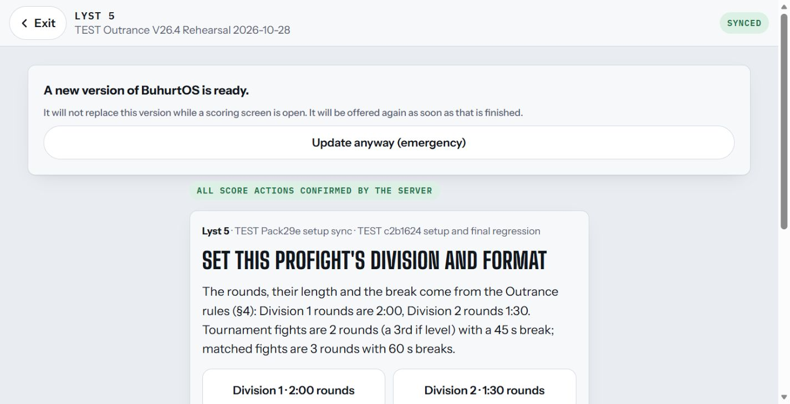
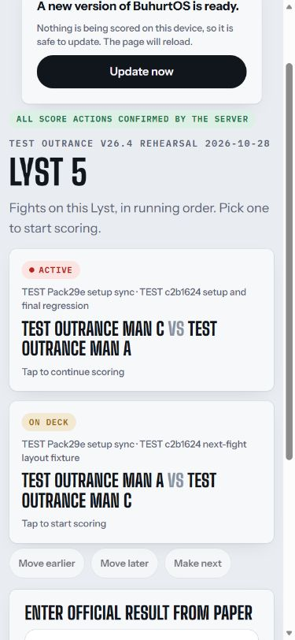
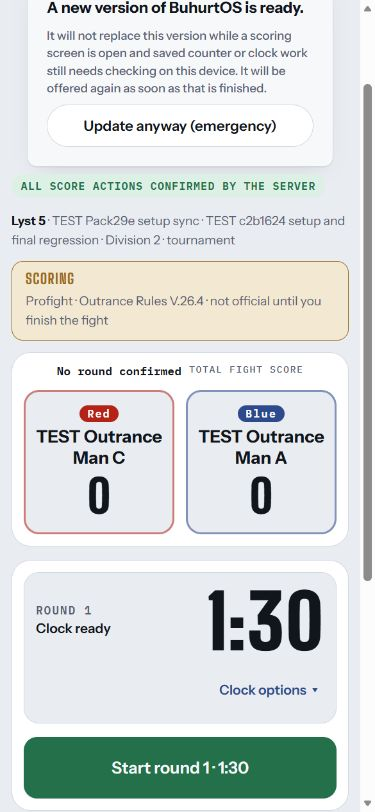
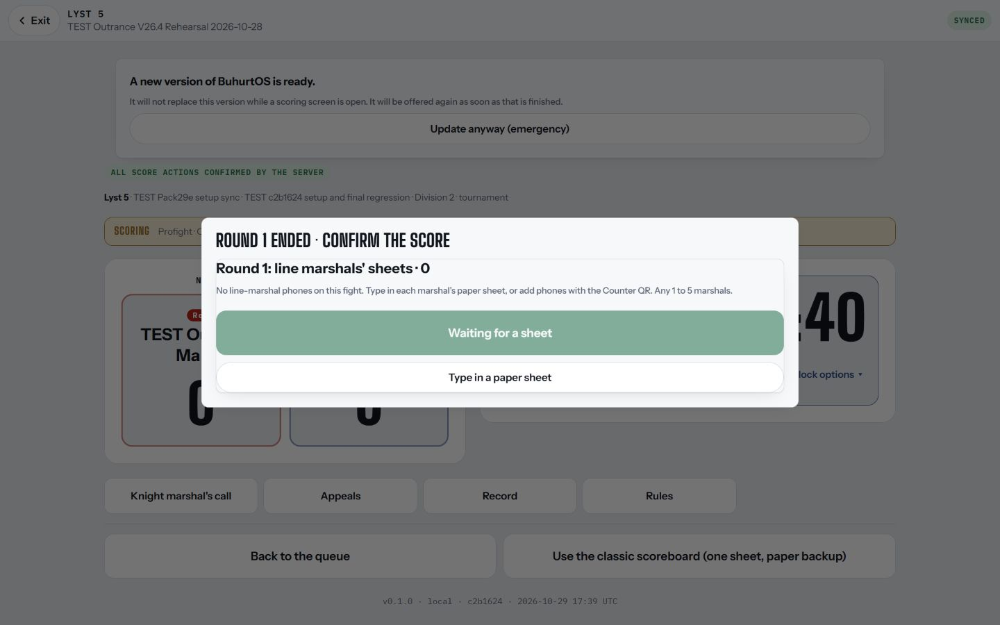
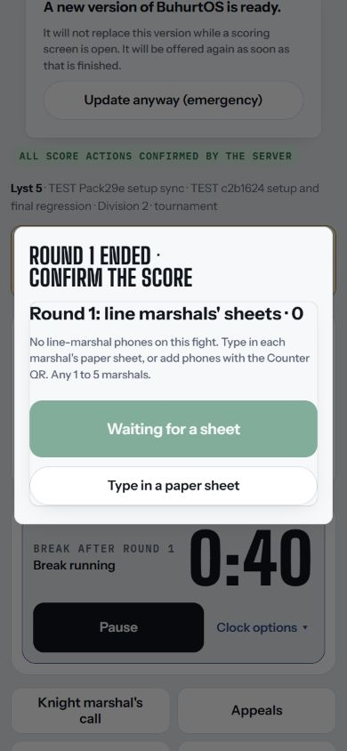
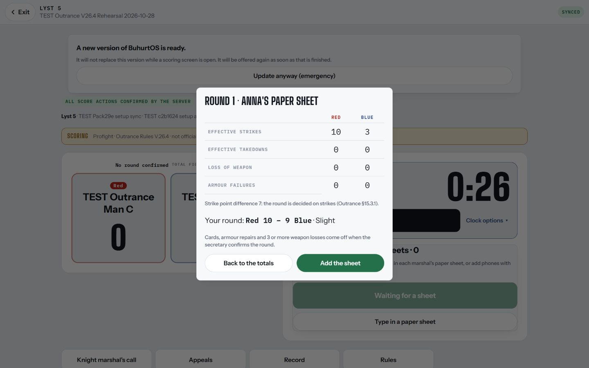
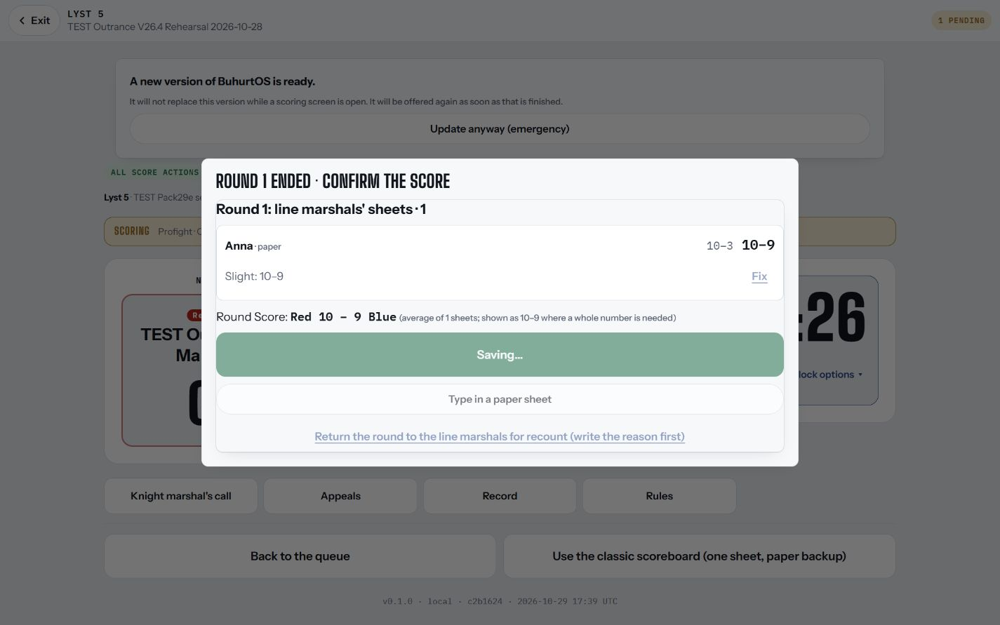
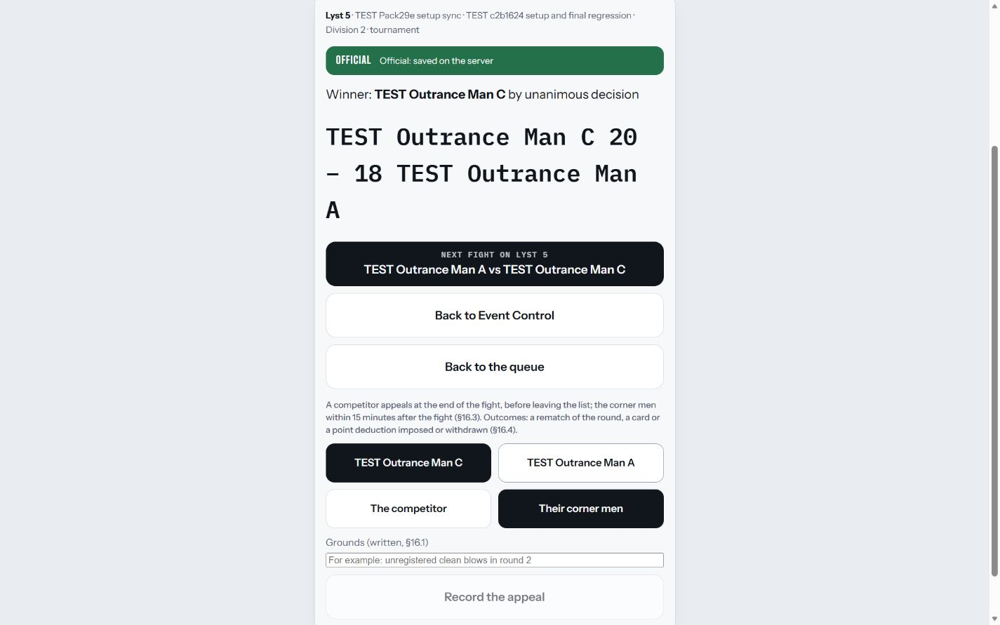
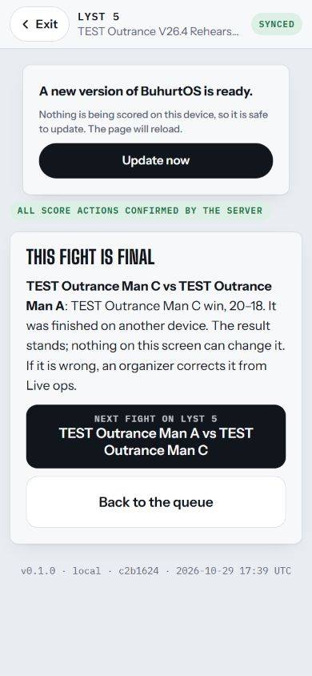
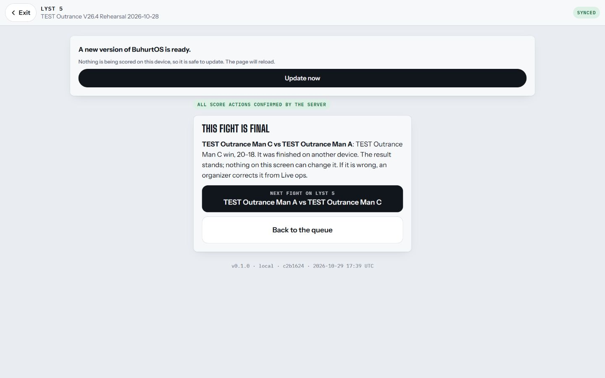
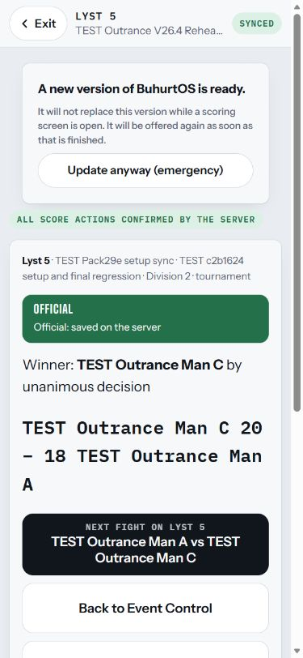
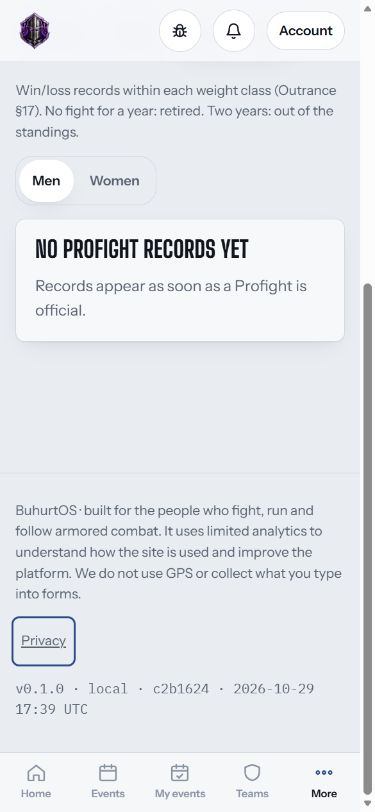
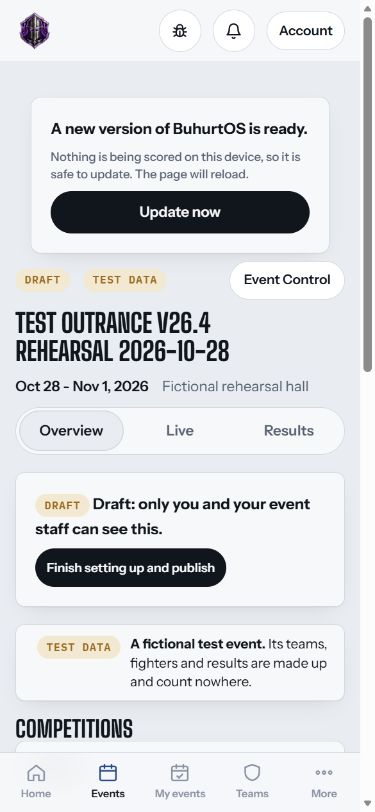
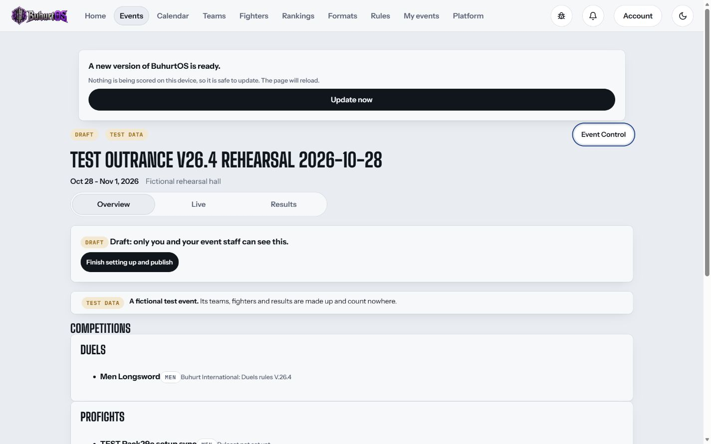